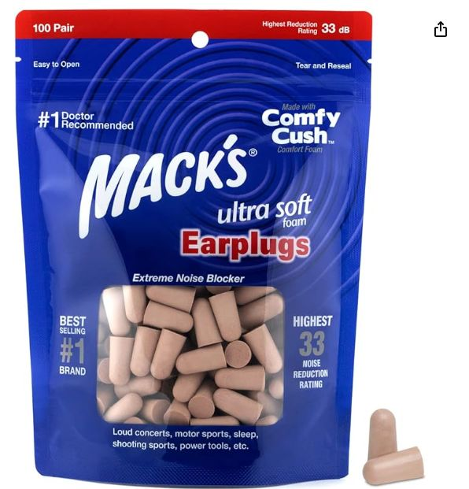
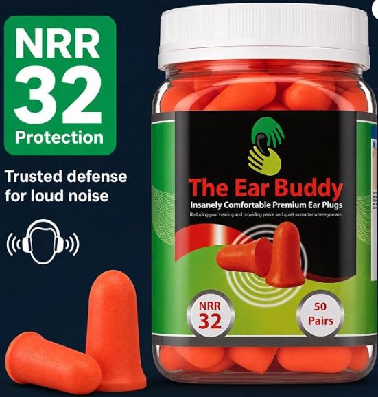
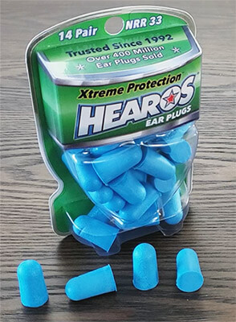
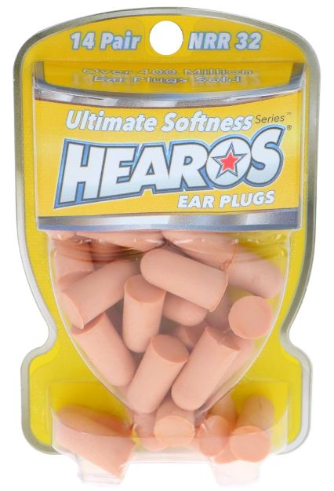
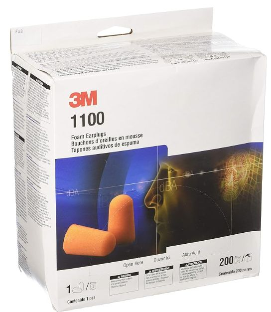
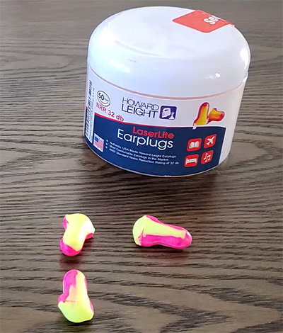
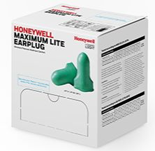
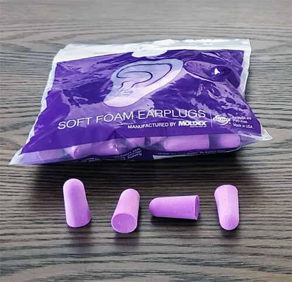
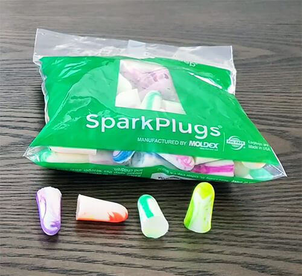
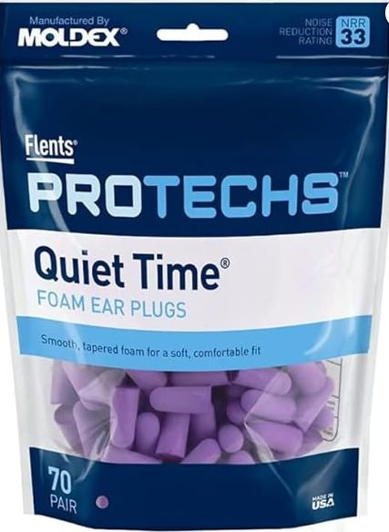

👂 Top Earplugs for Noise Reduction & Comfort — Foam, Wax & Silicone Compared
All 10 picks side by side — find your match in seconds
| Product | Material | Size | NRR |
|---|---|---|---|
| Mack's Ultra Soft | Foam | Small / Medium | 33 dB |
| Ear Buddy | Foam | Medium / Large | 32 dB |
| Hearoes Xtreme Protection | Foam | Large | 33 dB |
| Hearoes Ultimate Softness | Foam | Small | 32 dB |
| 3M 1100 | Foam | Medium / Large | 29 dB |
| Howard Leight Laser Lite | Foam | Large | 32 dB |
| Howard Leight Max Lite | Foam | Medium | 30 dB |
| Moldex Soft Foam | Foam | Medium / Large | 33 dB |
| Moldex Spark Plugs | Foam | Medium / Large | 33 dB |
| Flents Quiet Time | Foam | Medium | 33 dB |
* NRR = Noise Reduction Rating (decibels) | Higher NRR = Better noise blocking









